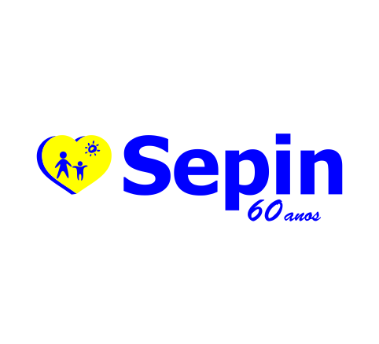
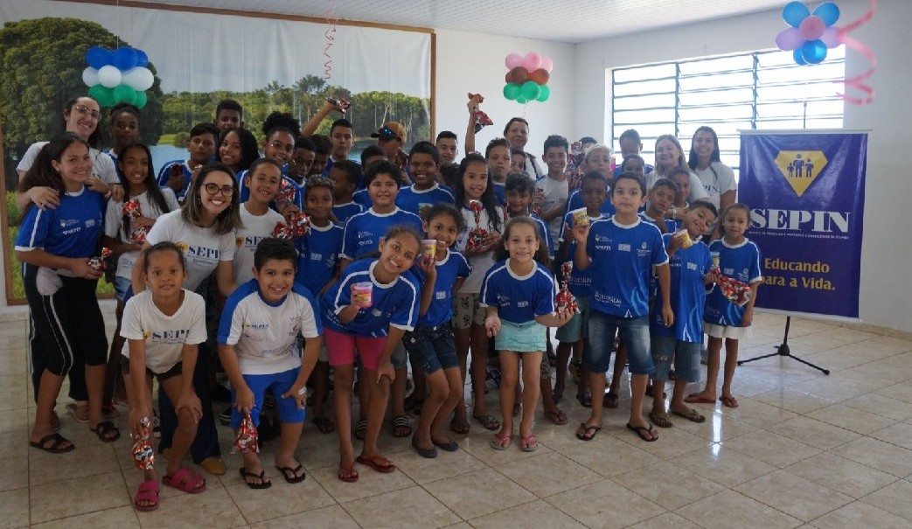
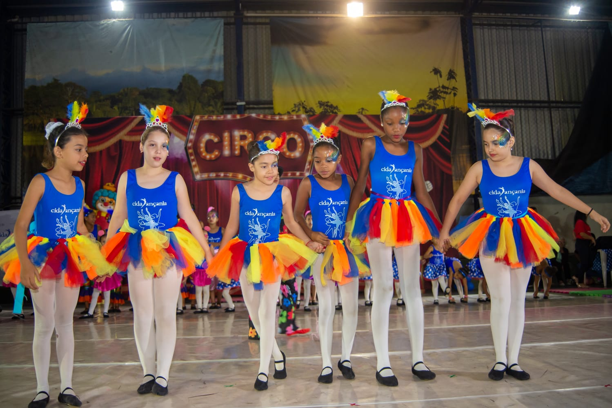
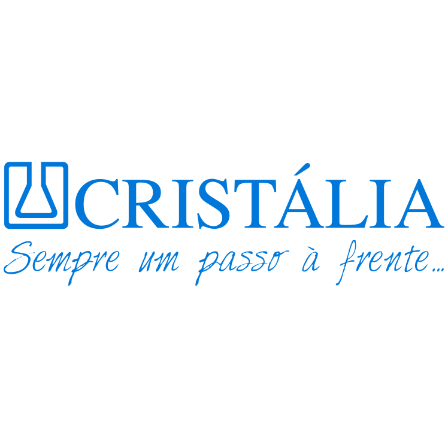
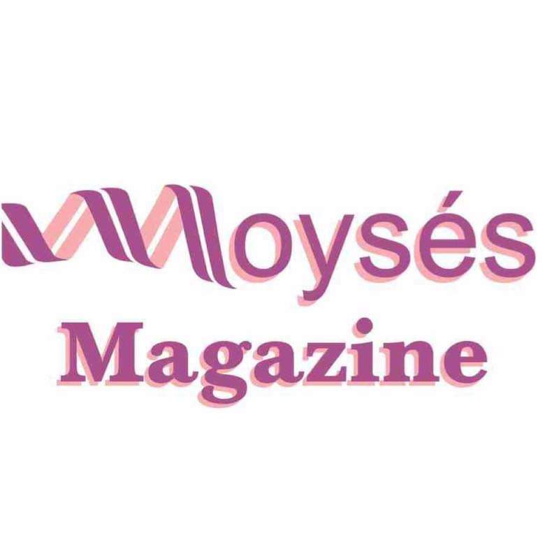
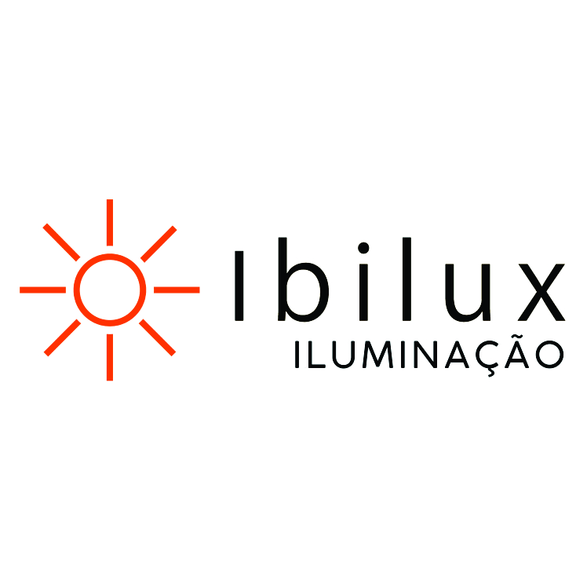
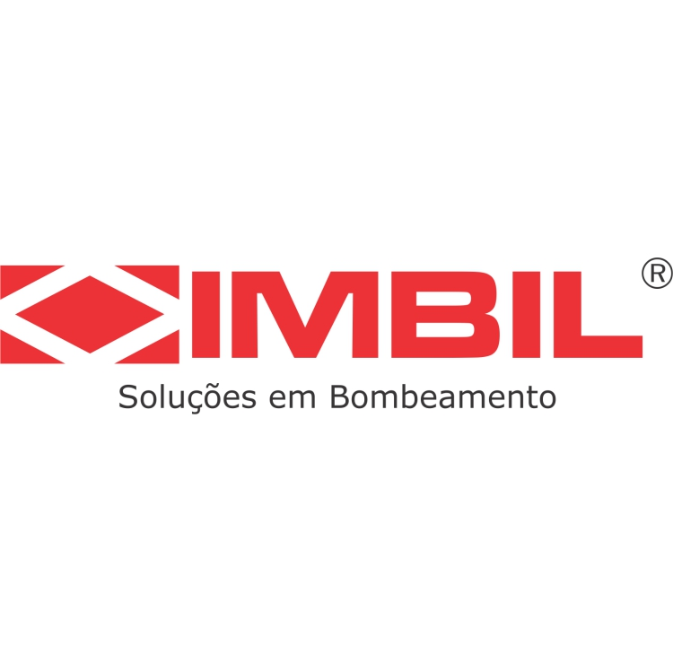
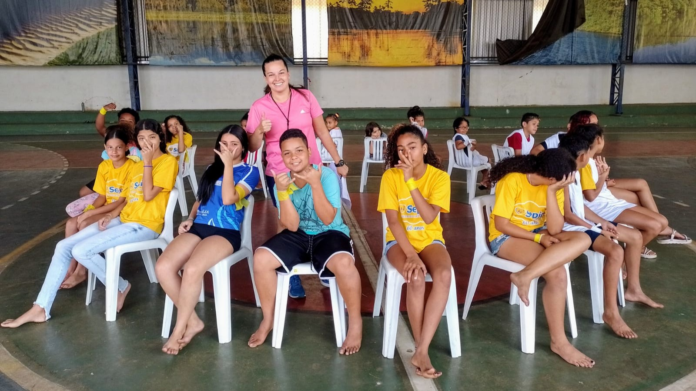

Socioeducativo

O SEPIN é uma organização social que atua em Itapira promovendo o desenvolvimento de crianças e adolescentes em situação de vulnerabilidade. Por meio de atividades socioeducativas, fortalecemos vínculos familiares, incentivamos a cidadania e criamos oportunidades para um futuro melhor.

Nossos projetos vão além de atividades: são experiências que desenvolvem habilidades, fortalecem vínculos e ampliam oportunidades para crianças e adolescentes.

disciplina, respeito, autoconfiança e superação

expressão artística, autoestima e desenvolvimento pessoal
Atividades em espaços lúdicos e criativos
Estimula expressão e convivênciaVivência musical no cotidiano
Desenvolve sensibilidade e culturaLeitura e interação em grupo
Fortalece vínculos e aprendizadoAtividades manuais e criativas
Desenvolve habilidades e autoestimaAtividades físicas e recreativas
Estimula disciplina e cooperaçãoEncontros com orientação técnica
Promove cidadania e consciênciaCom o seu apoio, o SEPIN continua oferecendo oportunidades, acolhimento e desenvolvimento para crianças, adolescentes e suas famílias em Itapira. Cada contribuição faz a diferença.
Compartilhe seu tempo, conhecimento e ajude a transformar realidades.
Quero ser voluntárioEmpresas e instituições podem apoiar projetos e gerar impacto social.
Seja um parceiroEmpresas e instituições que apoiam e fortalecem nosso trabalho.




Acompanhe as ações, projetos e eventos que mostram o impacto do SEPIN na comunidade.


Entre em contato para tirar dúvidas, solicitar informações ou saber como apoiar nossas iniciativas.